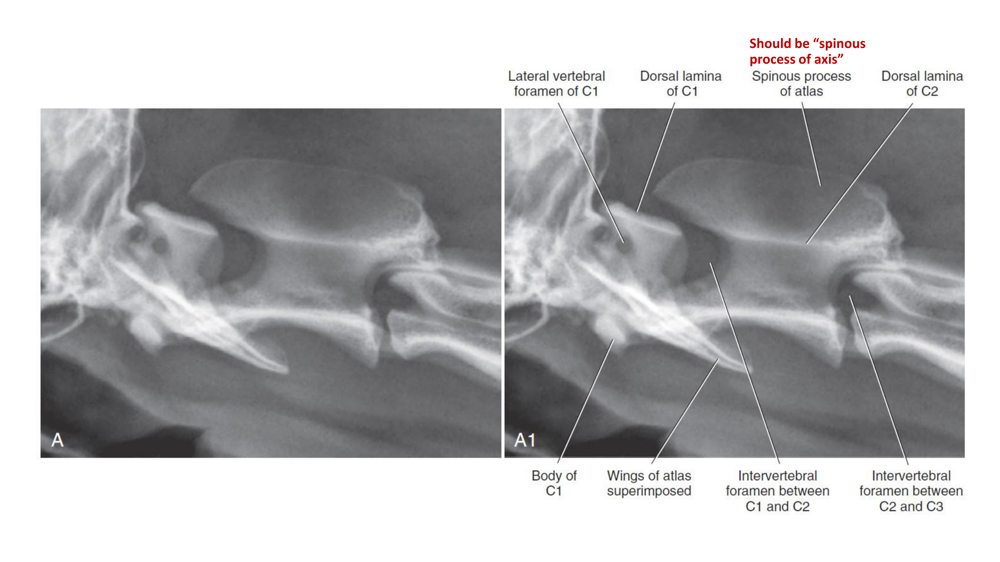
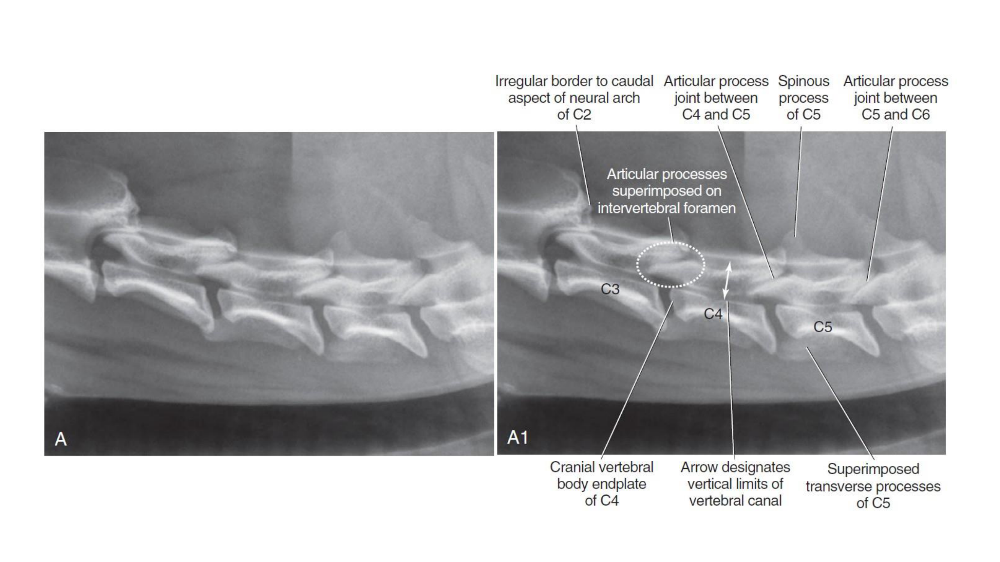
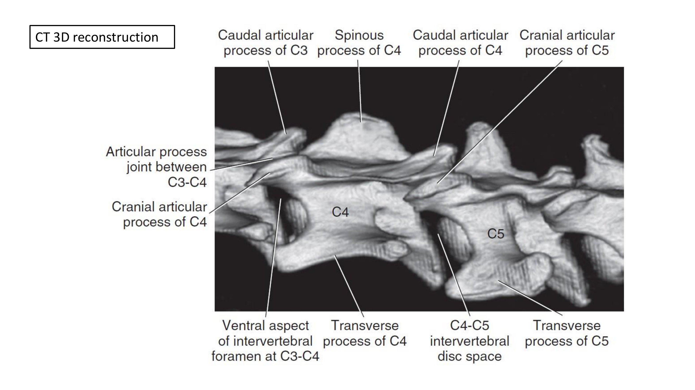
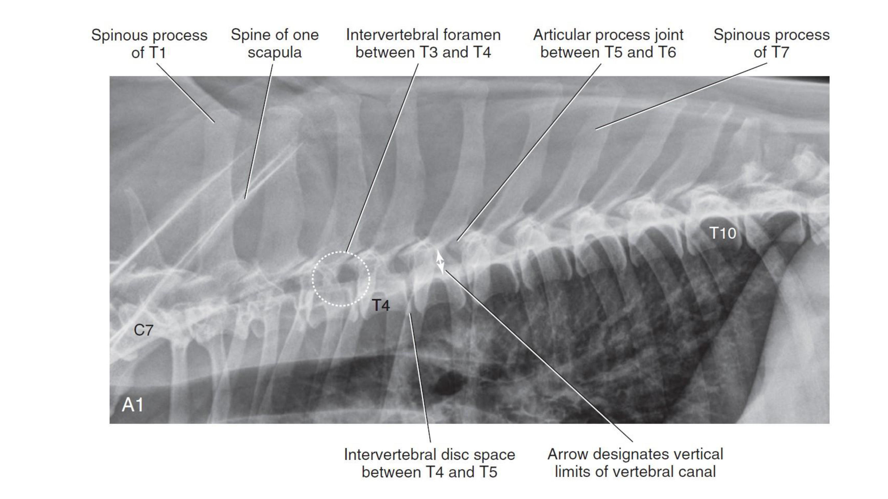
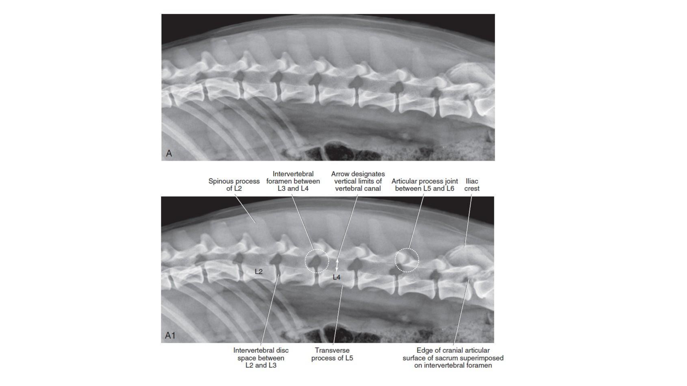
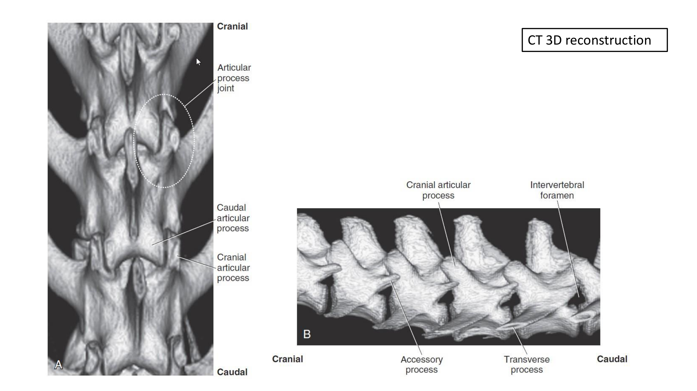
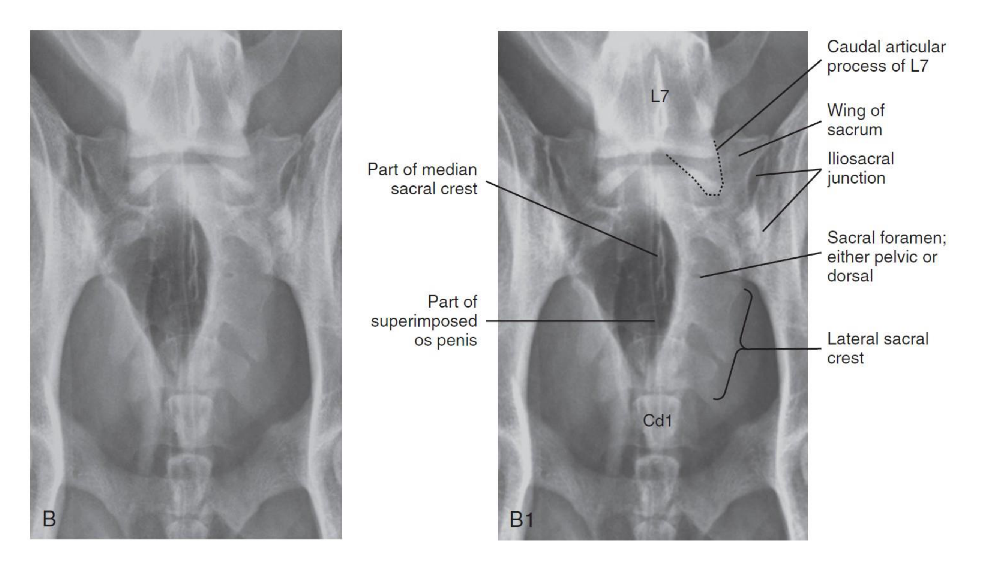

使用說明
本頁是標記辨識用的解剖圖譜，不是疾病判讀筆記——目的是熟悉脊椎X光片上每個解剖構造的正確名稱與相對位置，為下週的圖譜標記小考做準備。關於異常影像特徵與鑑別診斷，請見脊椎影像判讀。每張圖左側（無標記）先自我測驗，能不能認出構造再看右側（有標記）對照，複習效果比直接看標記版更好。
圖譜依脊椎節區排列：頸椎（C1–C6）→ 胸椎（C7–T10）→ 腰椎與腰薦交界（L2–L7）→ 腰薦／薦椎（VD），並附上代表性節區的CT 3D重組影像作為立體參考——同一個解剖構造（如關節突關節、椎間孔、副突）在平面X光與立體重組上對照看，比較容易建立空間概念。每張圖下方列出該圖出現的關鍵構造，複習時可以蓋住圖片、只看構造清單，自我測驗是否記得每個構造在圖上的相對位置。
頸椎 Cervical Spine（C1–C6）外側位
寰椎（C1）與樞椎（C2）形狀特殊、辨識度高，是頸椎影像定位的起點；C3–C6形狀較為相似，需依序計數才能正確編號。



頸胸交界至前胸椎 C7–T10 外側位
C7（最後一節頸椎，無明顯棘突方向轉折）與T1（第一節胸椎，棘突開始向尾側傾斜）是頸胸交界計數的起點。

胸椎計數最可靠的方式是從T10或明顯的肩胛骨／肋骨標記反推，而不是從頭數到尾容易數錯；肩胛棘與胸椎棘突重疊的區域（約T1–T3）在外側位上訊號較複雜，判讀時要留意不要把肩胛骨構造誤認為椎體本身的異常。
腰椎與腰薦交界 L2–L7 外側位
腰椎棘突方向轉為顱側傾斜，橫突（transverse process）明顯且方向多變，是腰椎外側位判讀時最容易造成偽像疊加的構造。


腰薦交界／薦椎 VD 投照
VD投照是評估腰薦交界左右對稱性與薦椎翼（wing of sacrum）／髂薦關節（iliosacral junction）最重要的投照方向。

薦骨翼與髂骨的髂薦關節（iliosacral junction）是腰薦椎不穩定（lumbosacral instability）好發評估的位置，VD投照上要能分辨這條關節線與正常薦骨翼外緣的差異；公犬VD投照常見陰莖骨（os penis）影像與薦骨中線重疊，判讀時不要誤認為椎管內異常密度。
CT 3D 重組參考總覽
平面X光是所有構造疊加後的投影，CT 3D重組能把關節突關節、椎間孔、副突等容易疊加混淆的構造還原成立體形狀，是輔助理解平面標記圖的重要工具，建議搭配上方對應節區的外側位圖一起複習。
小考前自我檢核
蓋住標記版，只看無標記的左側圖，依序自問下列問題；能夠不看答案獨立完成，再對照右側標記版確認。